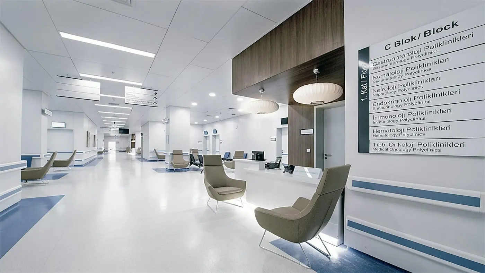

Better Care Through Better Coordination
Founded with the belief that patient well-being flourishes when specialized physicians, cutting-edge technology, and compassionate support work in perfect harmony.
Discover Our StoryA Journey Rooted in Clinical Purpose
STACKLY Healthcare was established by a coalition of senior physicians and health system innovators who observed a persistent challenge in modern healthcare: fragmented care. Patients were shuttling between disconnected clinics, repeating lab tests, and managing their own medical records without unified guidance.
We set out to engineer an integrated healthcare model where primary care physicians, sub-specialists, clinical diagnostic imaging, and personalized treatment plans exist within one cohesive, compassionate framework.
Mission & Vision
Guiding every diagnosis, every surgical intervention, and every interaction with our community.
Our Mission
To make coordinated, evidence-based healthcare seamlessly accessible to every individual by bridging clinical specialization with compassionate human touch, transparent medical communication, and responsible clinical stewardship.
Our Vision
To be the benchmark for integrated clinical excellence where patient outcomes lead regional benchmarks, and where every patient feels recognized, understood, and proactively supported throughout life.
The Patient-Centered Philosophy
We believe true healing requires more than prescriptions; it requires deep listening and trust.
Empathy First
Every clinical encounter begins with active listening. We understand the emotional vulnerability that accompanies health concerns.
Evidence-Based Rigor
Every therapy, diagnostic panel, and surgical recommendation strictly adheres to international clinical practice guidelines.
Radical Transparency
Clear explanations of diagnostic results, transparent billing without hidden line items, and collaborative shared decision-making.
Multidisciplinary Clinical Teams
Physicians, nurse practitioners, pharmacists, and rehabilitation specialists collaborating for you.
Cardiology Team
12 Interventionalists & Electrophysiologists
View Department FacultyTechnology Serving Human Care
Technology at STACKLY is not designed to replace physician interaction, but to remove administrative friction. From AI-assisted early radiology anomaly detection to unified digital charting, our systems give clinicians more uninterrupted time with each patient.
Zero Waiting Room Confusion
Automated mobile check-ins and live queue monitors keep you informed of your consult schedule.
Cloud-Synchronized Imaging
Direct access to your DICOM radiographic imaging from any internet-connected device.
Facilities & Infrastructure
Designed to promote healing, calm anxiety, and optimize surgical sterility standards.

Flagship CampusIntegrated Medical Center
Over 250,000 sq. ft. of climate-controlled clinical spaces featuring natural lighting and infection-control architecture.
Explore CampusModular Cleanroom Theaters
Positive-pressure laminar airflow operating suites equipped with robotic surgical arms and high-def endoscopic systems.
Explore CampusAcoustically Private Suites
Designed for comfort and complete patient confidentiality during clinical histories and counseling discussions.
Explore Campus